Manual:Installing/zh-cn
- Introduction
- Discovering FreeCAD
- Working with FreeCAD
- Python scripting
- The community
FreeCAD采用LGPL许可证，允许您下载、安装、重新分发并无限制地将其用于任何目的，无论是商业还是非商业用途。您保留所创建文件的完全所有权。
FreeCAD在Windows、macOS和Linux上运行一致，尽管安装过程因平台而异。对于Windows和Mac用户，FreeCAD社区提供即用型预编译安装程序。在Linux上，源代码提供给发行版维护者，由他们为特定系统打包软件。通常，Linux用户可以通过系统的软件管理器直接安装FreeCAD。
官方FreeCAD下载页面可以在FreeCAD下载页面找到。有关安装过程的更多信息，请参阅专门的下载维基。
FreeCAD 版本
FreeCAD的官方稳定版本可在引用的下载页面和您发行版的软件管理器中找到。然而，FreeCAD的开发速度很快，新功能和错误修复几乎每天都会被纳入。由于稳定版本之间的发布间隔较长，您可能希望尝试更当前的、处于前沿的FreeCAD版本。这些开发版本或预发布版本可以在同一个下载页面找到。对于Ubuntu或Fedora用户，FreeCAD社区还提供PPA（个人软件包存档）和copr '每日构建'，这些构建会定期更新以包含最新的开发内容。
如果您计划在虚拟机上安装FreeCAD，请注意，由于许多虚拟机对OpenGL的支持有限，其性能可能会受到严重影响，甚至可能无法使用。
在 Windows 上安装
- 从下载页面下载安装程序（.exe）。FreeCAD安装程序应适用于从Windows 7开始的任何Windows版本。
- 接受LGPL许可证条款；这将是少数几个您可以真正安全地点击“接受”按钮而不必阅读文本的情况之一。没有隐藏条款：
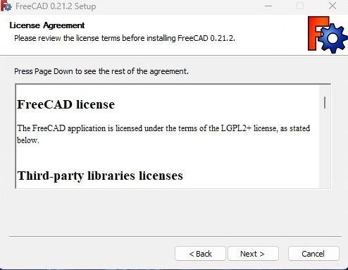
- 您可以保留默认路径，或根据需要更改：
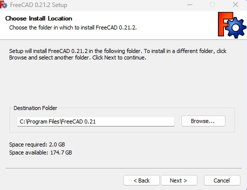
- 确保勾选所有要安装的组件：
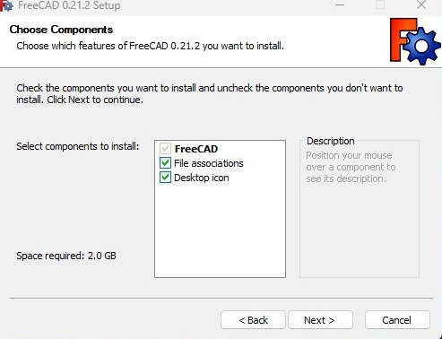
- 就这样。安装现已完成，您可以开始探索FreeCAD的功能。
{kind=link}
{kind=link}
{kind=link}
安装开发版本
打包 FreeCAD 并创建安装程序需要一些时间和投入，因此通常提供开发（也称为预发布）版本作为 .zip（或 .7z）存档文件。这些不需要安装，只需解压缩它们，并通过双击其中的 FreeCAD.exe 文件来启动 FreeCAD。这还允许您将稳定版本和“不稳定”版本同时保存在同一台计算机上。
在 Linux 上安装
在大多数现代 Linux 发行版（如 Ubuntu、Fedora、openSUSE、Debian、Mint、Elementary 等）上，可以通过点击按钮直接从发行版提供的软件管理应用程序进行安装 FreeCAD（它的外观可能与下面的图示不同，每个发行版使用自己的工具）。
- 打开软件管理器并搜索 "freecad"：
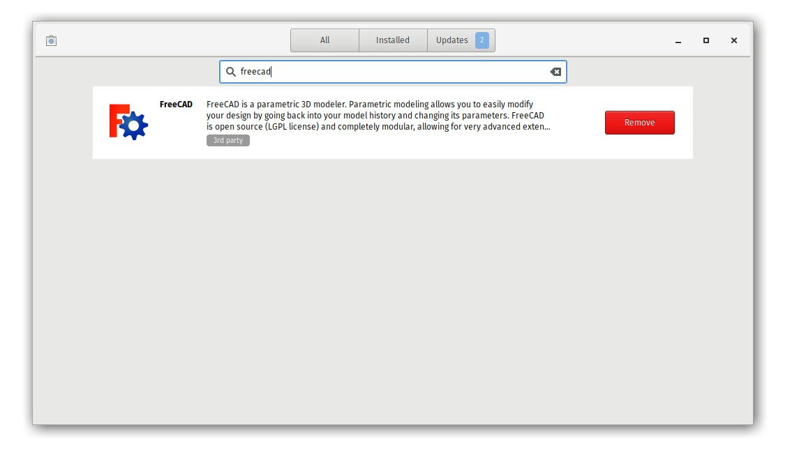
- 单击 "安装" 按钮，这样就安装了 FreeCAD。别忘了随后给它评分！
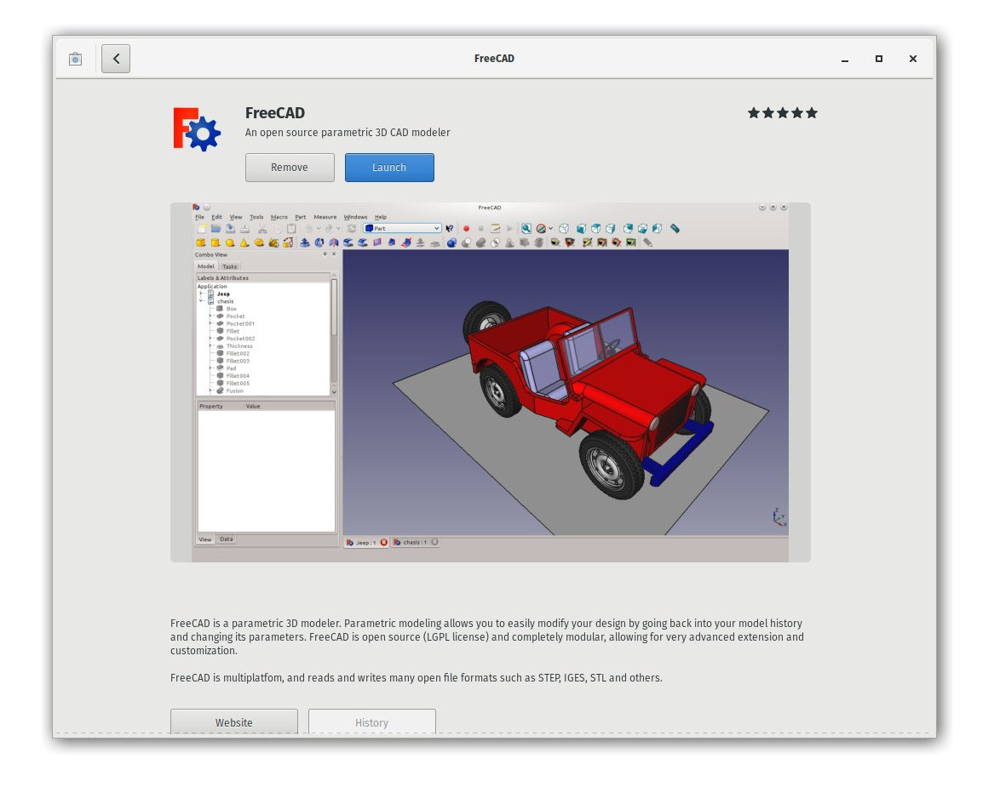
{kind=link}
{kind=link}
其他方式
使用 Linux 的一大乐趣在于定制软件的多种可能性，所以不要限制自己。在 Ubuntu 及其衍生版上，还可以从由 FreeCAD 社区维护的 PPA 安装 FreeCAD（包含稳定版和开发版）。在 Fedora 上，可以从 copr 安装最新的 FreeCAD 开发版本。由于这是开源软件，您还可以轻松地 自己编译 FreeCAD。
在 Mac OS 上安装
在 Mac OSX 上安装 FreeCAD 现在和其他平台一样简单。 但是，由于社区中拥有 Mac 的人数较少，因此可用的软件包有时会落后于其他平台的版本。
- 从 下载页面下载与您的版本相对应的压缩包。
- 打开“下载”文件夹，并展开下载的 zip 文件：
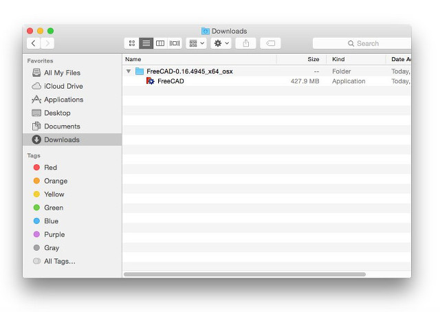
- 将 zip 文件内的 FreeCAD 应用程序拖动到“应用程序”文件夹中：
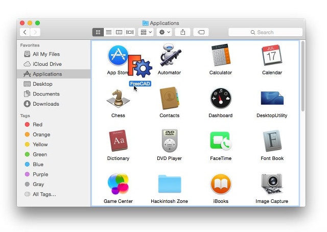
- 完成，FreeCAD 已安装！
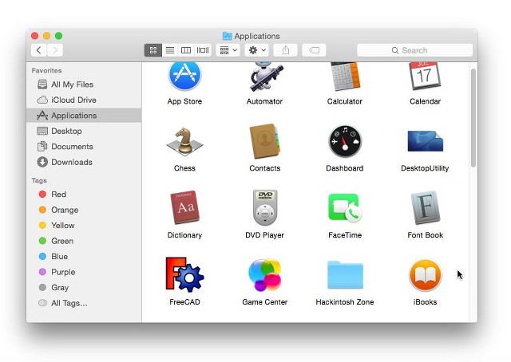
- 如果系统因为应用程序不来自 App Store 而阻止 FreeCAD 的启动，您需要在系统设置中启用它：
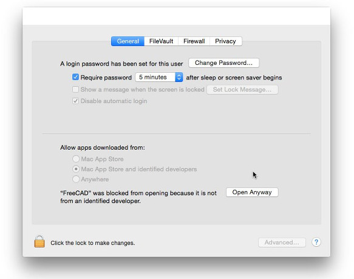
{kind=link}
{kind=link}
{kind=link}
{kind=link}
卸载
希望您不需要卸载 FreeCAD，但了解如何卸载也没错。在 Windows 和 Linux 上，卸载 FreeCAD 非常简单。在 Windows 上，使用控制面板中的标准“卸载软件”选项；在 Linux 上，使用您用于安装的软件管理器进行卸载。在 Mac OS 上，只需从应用程序文件夹中将其删除即可。
设置基本偏好选项
一旦安装了 FreeCAD，您可能想要打开它并更改一些偏好设置。在 FreeCAD 中，偏好设置位于菜单 编辑 → 偏好设置 下。下面列出了一些您可能希望更改的基本设置；您可以浏览偏好设置页面，看是否还有其他您想要更改的内容。
通用类别，通用选项卡
{kind=link}
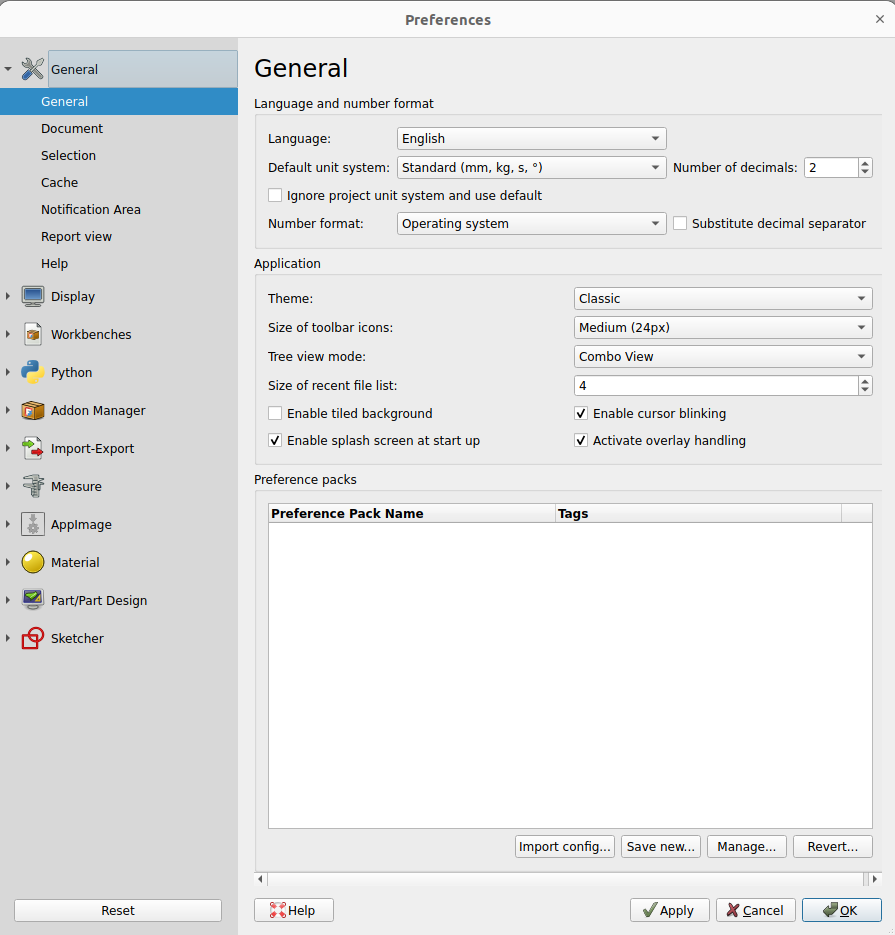
- ‘’'语言'‘’: 默认情况下，FreeCAD 将选择您操作系统的语言，但您可自行更改。得益于众多贡献者的奉献，FreeCAD 支持多种语言版本。
- ‘’'单位'‘’: 此设置允许您为项目选择默认的单位系统。
通用类别，文档选项卡
{kind=link}
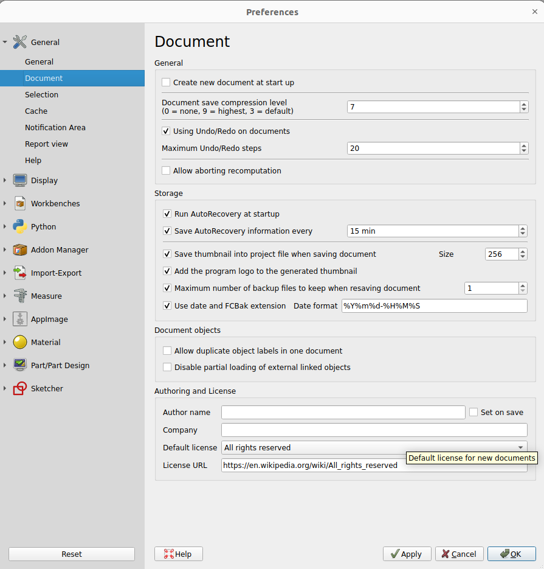
- ‘’'启动时创建新文档'‘’: FreeCAD 将在每次启动时自动打开一个新文档。
- ‘’'存储选项'‘’: 在此配置设置，以便在程序崩溃时帮助您恢复工作。
- ‘’创作与许可'‘’'：在此区域可设定新文件的默认参数。为便于共享，建议采用更开放的copyleft许可协议（如Creative Commons）作为初始选项。
显示类别，导航选项卡
{kind=link}
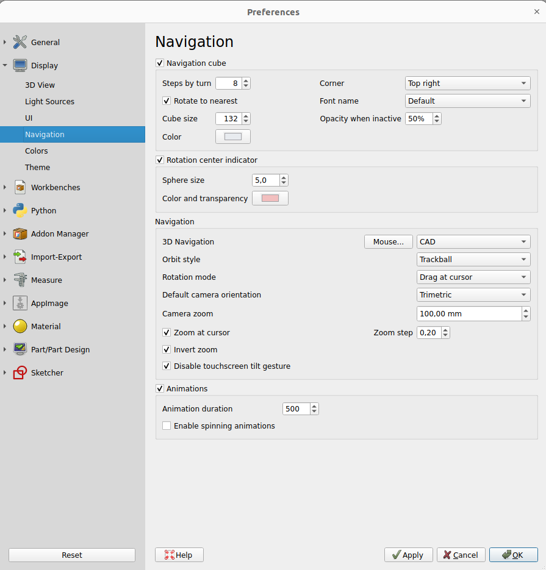
- ‘’'光标缩放'‘’: 启用时，缩放操作以鼠标光标为中心。禁用时，缩放以视图中心为焦点。
- ‘’'反向缩放'‘’: 此选项将缩放方向与鼠标移动方向相反。
工作台选项卡
{kind=link}
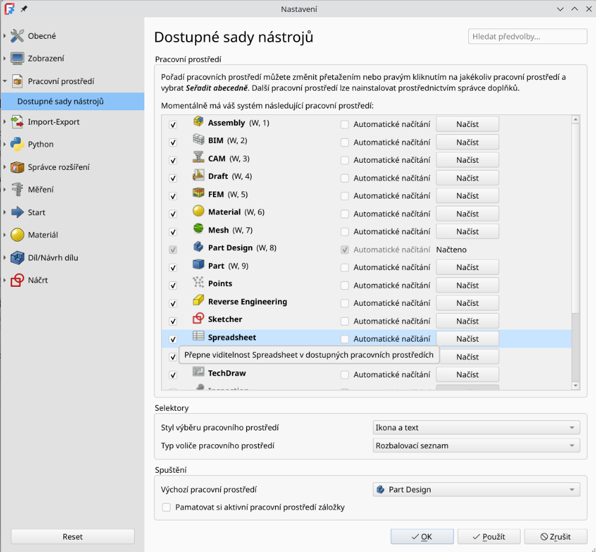
尽管FreeCAD通常会打开起始页面，但此设置可让您跳过该页面。您可直接进入首选工作台。此外，您还可自定义选择器菜单中显示的工作台。
导入导出选项卡
{kind=link}
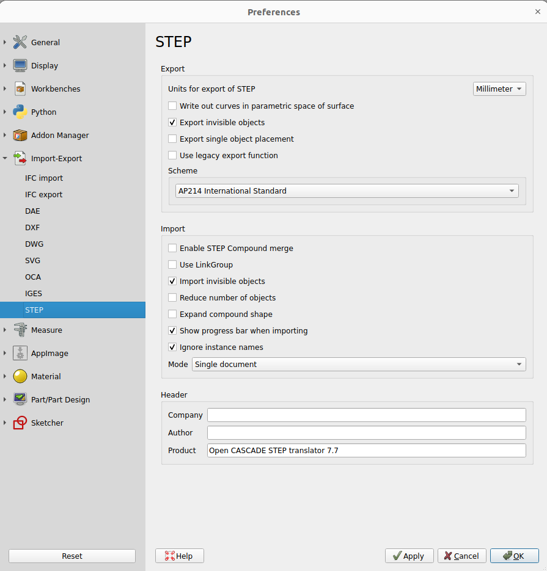
在此处定义导入和导出各种格式的基本参数。
安装其他内容
随着 FreeCAD 项目和其社区的快速发展，以及其易于扩展的特性，社区成员和其他爱好者开始在互联网上推出各种外部贡献和附加项目。这些外部项目中的大部分是工作台或宏，可以通过 FreeCAD 菜单 “Tools” 下的 附加组件管理器 直接安装。附加组件管理器将允许您安装许多有趣的组件，例如：
{kind=link}
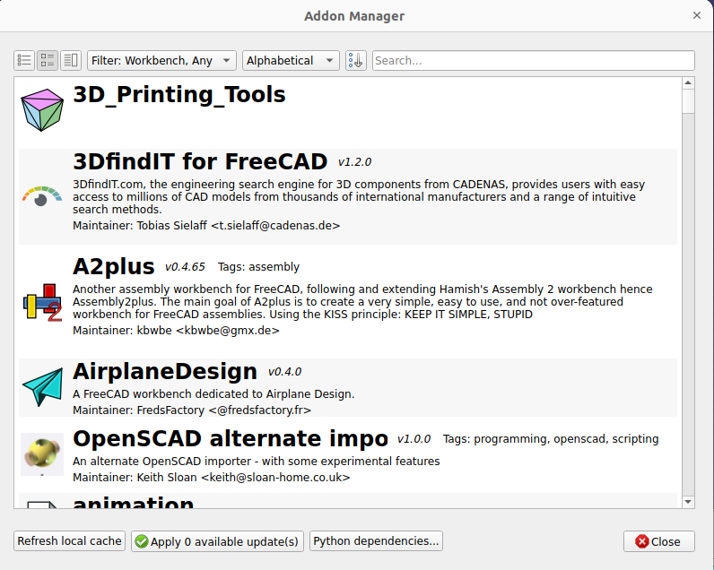
- 部件库，包含由 FreeCAD 用户创建的各种有用模型，或模型的一部分，可以自由在您的项目中使用。该库可以直接从您的 FreeCAD 安装中使用和访问。
- Additional workbenches，扩展了 FreeCAD 的功能，用于特定任务，例如为您的模型的部分或区域添加动画效果，如板金折叠或 BIM。关于每个附加工作台及其包含的工具的更多解释可以在附加组件管理器上的各个附加组件页面中找到，您可以通过点击相应链接访问它们。
- 一组 宏，这些宏也可以在 FreeCAD 维基 上找到，并提供了关于如何使用它们的文档。
截至 FreeCAD v0.17.9940 版本，上述所有工具的推荐安装方式均为内置插件管理器。但若因故无法使用此选项，仍可选择手动安装。更多信息请参阅 FreeCAD 插件页面。
延伸阅读
- 更多下载选项
- FreeCAD PPA（适用于 Ubuntu）
- FreeCAD 附加组件 PPA（适用于 Ubuntu）
- 自行编译 FreeCAD
- FreeCAD 翻译
- FreeCAD GitHub 页面
- FreeCAD 附加组件管理器